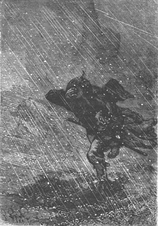
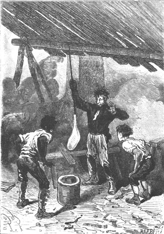
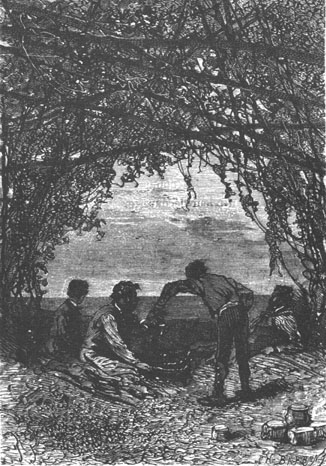

The weather changed during the first week of March. There had been a full moon at the beginning of the month and the heat was excessive. One felt that the atmosphere was charged with electricity and a more or less extended period of stormy weather was indeed to be feared.
In fact on the 2nd it thundered with extreme violence. The wind blew from the east and hail directly attacked the Granite House facade, crackling like a volley of grape-shot. They had to hermetically seal the door and the window shutters, otherwise all would have been flooded in the inside of the rooms.
Upon seeing these hailstones fall, some of which were the size of a pigeon’s egg, it occurred to Pencroff that his cornfield was in serious danger.
Soon he ran to his field where the ears were already beginning to raise their little green heads and, with a large cloth he succeeded in protecting his harvest. He was pelted but he did not complain.

Soon Pencroff ran to his cornfield.
This bad weather lasted for eight days during which the thunder did not cease. Between storms, they still heard it rumbling beyond the limits of the horizon; then it returned with new fury. The lightning hit several trees on the island, among others an enormous pine that grew near the lake at the edge of the forest. Two or three times the lightning struck the shore, melting the sand and vitrifying it. On recovering these fulgurites, the engineer was led to believe that it would be possible to make thick and sturdy window panes which would resist the wind, the rain and the hail.
The colonists, not having any pressing work to do outside, profited from the bad weather by working inside Granite House whose arrangements were perfected day by day. The engineer made a potter’s wheel which allowed him to turn out several articles for their clothing and for the kitchen, in particular some buttons which they needed badly. A rack was made to hold the weapons which were maintained with extreme care, and neither the shelves nor the closets left anything to desire. They sawed, they planed, they filed, they turned the potter’s wheel, and during the bad weather they heard only the grinding of the tools or the rumbling of the wheel responding to the roaring of the thunder.
Master Jup had not been forgotten and he occupied his own room near the storeroom, a sort of cabin with a cot filed with good litter which suited him perfectly.
“With worthy Jup, never any recrimination,” Pencroff often repeated, “never any inconvenient response! What a servant, Neb, what a servant.”
“My pupil,” replied Neb, “and soon to be my equal!”
“Your superior,” retorted the sailor laughing, “because you talk and he does not!”
It goes without saying that Jup was now in the swing of things. He beat the clothes, he turned the spit, he swept the rooms, he served at the table, he arranged the wood and—a detail which enchanted Pencroff—he never went to sleep without coming to tuck in the worthy sailor in his bed.
As to the health of the members of the colony, bipeds or bimanes, quadrumanes or quadrupeds, it left nothing to desire. With this life in the open air, on this wholesome soil, under this temperate zone, working with body and mind, they could not believe that illness would ever affect them.
All went well. In fact, Herbert had already grown two inches in a year. His figure was becoming more masculine and he promised to become a man accomplished in body and in morals. Besides, he profited by teaching himself during the spare time left to him after his manual occupations. He read some books found in the case and after the practical lessons which resulted from the very necessity of their situation, he found out about the sciences from the engineer and about languages from the reporter, masters who were pleased to complete his education.
The engineer’s obsession was to transmit all that he knew, to instruct by example as well as by word, and Herbert profited well from his professor’s lessons.
“If I die,” thought Cyrus Smith, “it is he who will take my place.”
The storm finally ended around the 9th of March but the sky remained covered with clouds during all of this last month of the summer. The atmosphere, violently troubled by these electrical disturbances, could not recover its former purity, and it was nearly always rain and fog except for three or four fine days which favored excursions of all sorts,
About this time, the female onager gave birth to a young one which belonged to the same sex as her mother and which did well. At the corral there was also an increase in the flock and several lambs were already bleating under the hangars to the great joy of Neb and Herbert who each had their favorites among the new-born.
They also tried to domesticate the peccaries, an attempt which completely succeeded. A stable was constructed near the poultry yard and they soon counted several young in a mood to be civilized, that is to say fattened under Neb’s care, Master Jup, charged with bringing them their daily nourishment, dishwater, kitchen scraps, etc. acquitted himself conscientiously in this job. He came now and then to amuse himself at the expense of his young boarders and to pull their tails, but it was mischievousness and not wickedness because these small wriggling tails amused him like a toy and his instinct was that of a child.
One day during this month of March, Pencroff, chatting with the engineer, reminded Cyrus Smith of a promise that he still had not had the time to fulfil.
“You spoke of a sort of lift to replace the long ladders of Granite House, Mister Cyrus,” he said to him. “Won’t you make it some day?”
“You wish to speak of a sort of lift?” replied Cyrus Smith.
“Call it a lift if you wish,” replied the sailor, “the name means nothing provided it can lift us to our dwelling without fatigue.”
“Nothing will be easier, Pencroff, but is it useful?”
“Certainly, Mister Cyrus. Now that we have the necessities, let us think a little about comfort. For people it will be luxurious if you wish; but for things it is indispensable! It is not convenient to climb up a long ladder when one is heavily loaded.”
“Well, Pencroff, we will try to satisfy you,” replied Cyrus Smith.
“But you do not have any engine available.”
“We will make it.”
“A steam engine?”
“No, a water engine.”
And in fact, to move his apparatus, a natural force was there for the engineer to use without great difficulty.
For this purpose it sufficed to increase the flow of the small diversion from the lake which furnished water to the interior of Granite House. The opening arranged between the stones and grass at the upper end of the passageway was enlarged. This produced a strong fall at the bottom of the corridor, whose overflow fell into the inside well. Below the fall, the engineer installed a cylinder with paddles which connected to the outside with a strong cable wound around a wheel and supporting a basket. By means of a long cord which came to the ground, which could engage and disengage with the hydraulic motor, they could raise the basket to the door of Granite House.
It was the 17th of March when the lift functioned for the first time and gave universal satisfaction. Henceforth all the loads, the wood, coal, provisions and the colonists themselves were hoisted by this simple system which replaced the primitive ladder that no one missed. Top showed particular enchantment with this improvement because he did not have and could not have Master Jup’s skill in climbing ladders and often he made the climb to Granite House either on Neb’s back or on that of the orang himself.
About this time Cyrus Smith also tried to make glass. First he had to adapt the old pottery furnace to this new application. This presented some rather great difficulties, but after several unfruitful attempts he succeeded in getting a glassworks going, which Gideon Spilett and Herbert, the natural assistants of the engineer, did not leave for several days.
As to the substances that enter into the composition of glass, they are only sand, chalk and soda (carbonate or sulphate). Now the shore could furnish the sand, the lime could furnish the chalk, the marine plants could furnish the soda, the pyrites could furnish the sulphuric acid, and the soil could furnish the coal to heat the furnace to the desired temperature. Thus Cyrus Smith found the conditions necessary for the operation.
The tool whose manufacture would offer the most difficulty was the glass blower, an iron tube five or six feet long which would collect the material at one end and keep it in the fuzed state. But by means of a long and thin sheet of iron which was rolled up like a gun barrel, Pencroff succeeded in making this blower which was soon in working condition.
On the 28th of March the furnace was heated up. One hundred parts of sand, thirty five of chalk, forty of sodium sulphate, mixed with two or three parts of powdered coal, composed the substance which was placed in fire clay crucibles. When the high temperature of the furnace had reduced it to the liquid state or at least to a pasty state, Cyrus Smith collected a certain quantity of this paste with the blower; he worked and reworked it on a previously made plate of metal so as to give it a suitable shape for blowing; then he passed the blower to Herbert and told him to blow through the other end.
“Like making soap bubbles?” asked the lad.
“Exactly,” replied the engineer.
And Herbert, puffing up his cheeks, blew into the blower taking care to turn it continually. His breath dilated the glassy mass. More fuzed material was added to the first batch and it soon resulted in a bubble that measured a foot in diameter. Then Cyrus Smith took the blower from Herbert’s hands and imparted a pendulum movement to it which ended by elongating the malleable bubble so as to give it a cylindrical-conical form.
The blowing operation had thus given a glass cylinder terminated by two hemispherical domes which were easy to detach by means of a sharp iron dipped in cold water; then by the same procedure this cylinder was split along its length. Having been made malleable by a second heating, it was stretched out on a plate and flattened with a wooden roller.
The first glass pane was made and it was sufficient to repeat the operation fifty times to make fifty panes. The windows of Granite House were shortly provided with transparent panes, not very clear perhaps, but sufficiently transparent.
As to cups, glasses and bottles, that was fun. Besides, they welcomed whatever came from the end of the blower. Pencroff asked for the privilege of “blowing” when his turn came, and it was a pleasure for him, but he blew so hard that his products took on the most amusing shapes, which earned his admiration.

The products took on the most amusing shapes.
During one of the excursions that was made about this time, a new tree was discovered whose produce added to the food supply of the colony.
Cyrus Smith and Herbert, while hunting, had ventured one day into the forest of the Far West on the left bank of the Mercy and, as always, the lad asked a thousand questions of the engineer to which he gladly replied. But they did not have their minds on the hunting which was the reason that they had no success. Now since Cyrus Smith was not a hunter and since Herbert, on the other hand, spoke about chemistry and physics, many a kangaroo, capybara and agouti within easy reach escaped the lad’s shots. The result was that, with the day nearly over, the two hunters would probably have a useless excursion, when Herbert stopped and uttered a joyous cry:
“Ah! Mister Cyrus, do you see this tree?”
And he showed him a shrub rather than a tree because it was only composed of a single stem, covered with a scaly bark, which carried striped leaves with small parallel veins.
“And what is this tree which resembles a small palm tree?” asked Cyrus Smith.
“It is a sago palm whose picture I have in our natural history dictionary.”
“But I do not see any fruit on this bush.”
“No, Mister Cyrus,” replied Herbert, “but its trunk has a flour that nature has already ground for us.”
“It is the breadfruit tree?”
“Yes! The breadfruit tree.”
“Well, my boy,” replied the engineer, “this is a precious discovery while we are waiting for our wheat harvest. Let’s get to work and I hope that you are not mistaken.”
Herbert was not mistaken. He broke a stem of a sago which was composed of a glandular texture enclosing a certain quantity of floury pith, traversed by ligneous bundles, separated by rings of the same substance arranged concentrically. With this flour was mixed a gummy sap with a disagreeable taste but that would be easy to remove by pressure. This cellular substance formed an extremely nourishing flour of superior quality whose exportation was formerly prohibited by Japanese laws.
Cyrus Smith and Herbert, after having studied the portion of the Far West where the sago grew, took some reference points and returned to Granite House where they made their discovery known.
The next day the colonists came to the harvest and Pencroff, becoming more and more enthusiastic about his island, said to the engineer:
“Mister Cyrus, do you believe that there are islands for castaways?”
“What do you mean by that, Pencroff?”
“Well, I mean that there are islands created especially to make a shipwreck convenient, and on which poor devils can always manage their affairs.”
“That is possible,” replied the engineer, smiling.
“It is certain, sir,” replied Pencroff, “and it is none the less certain that Lincoln Island in one of them.”
They returned to Granite House with an ample harvest of sago stems. The engineer made a press in order to extract the gummy sap mixed with the flour and he obtained a significant quantity of flour which, in Neb’s hands, were transformed into cakes and puddings. It still was not real wheat bread but one could imagine that it was.
During this period the onager, the goats and the sheep of the corral furnished the daily milk necessary for the colony. Also the cart, or rather a sort of light covered trap which replaced it, made frequent trips to the corral, and when it was Pencroff’s turn to do it, he took Jup and had him drive it. Jup cracked his whip and acquitted himself with his usual intelligence.
All therefore prospered, at Granite House as well as at the corral and truly the colonists, though they were far from their native land, had nothing to complain of. They were so well made for this life and besides so accustomed to this island, that they would not have left its hospitable soil without regret.
And yet, such is the love of one’s country in the heart of man, that if some vessel had unexpectedly appeared in view of the island, the colonists would have signaled it, they would have attracted its attention, and they would have left!... While waiting for this, they lived a happy existence, and they feared rather than desired any event which might come to interrupt it.
But who could deceive himself and take comfort in illusions that fortune would always favor them!
Be it as it may, this Lincoln Island on which the colonists had lived for more than a year was often the subject of their conversation, and one day an observation was made which would later have serious consequences.
It was the 1st of April, Easter Sunday, that Cyrus Smith and his companions had sanctified with rest and prayer. It was a fine day like an October day in the northern hemisphere.
After dinner, toward evening, all were gathered under the veranda at the edge of Grand View Plateau and they looked at night coming on at the horizon. Several cups of this beverage of elder tree berries, which took the place of coffee, had been served by Neb. They chatted about the island and its isolated position in the Pacific when Gideon Spilett was led to say:

They chatted about the island and its isolated position.
“My dear Cyrus, have you, since you possessed this sextant in the case, have you again taken the bearings of our island?”
“No,” replied the engineer.
“But wouldn’t it perhaps be wise to do it, with this instrument which is more accurate than the one you used?”
“What’s the good?” said Pencroff. “The island is doing right well where it is!”
“Doubtless,” replied Gideon Spilett, “but the imperfection of the apparatus has affected the accuracy of the observations which can easily be verified exactly...”
“You are right, my dear Spilett,” replied the engineer, “and I should have made this verification sooner, but if I have committed some error it should not be more than 5° in longitude or in latitude.”
“Well, who knows?” replied the reporter, “who knows if we are not much nearer to inhabited land than we think?”
“We will know tomorrow,” replied Cyrus Smith, “and we would have known it already if it were not for those occupations which left me no leisure.”
“Fine!” said Pencroff, “Mister Cyrus is too good an observer to be mistaken and if the island has not budged from its place, then it is just where he put it.”
“We will see.”
The next day, by means of the sextant, the engineer made the observations necessary to verify the coordinates that he had already obtained and this was the result of his operation:
His first observation had given him for the position of Lincoln Island:
In west longitude: from 150° to 155°;
In south latitude: from 30° to 35°. The second gave exactly:
In west longitude: 150° 30′;
In south latitude: 34° 57′.
So, in spite of the imperfection of his apparatus, Cyrus Smith had operated with such competence that his error had not exceeded five degrees.
“Now,” said Gideon Spilett, “since we possess an atlas as well as a sextant, let us see, my dear Cyrus, the exact position that Lincoln Island occupies in the Pacific.”
Herbert went to find the atlas which, as we know, had been edited in France and which consequently had its nomenclature in the French language.
They opened up the map of the Pacific and the engineer, compass in hand, prepared to determine its position.
Suddenly the compass stopped in his hand and he said:
“But an island already exists in this part of the Pacific!”
“An island,” cried Pencroff.
“Ours, doubtless,” replied Gideon Spilett.
“No,” replied Cyrus Smith. “This island is situated at 153° longitude and 37° 11′ latitude, that is to say at two and a half degrees further west and two degrees further south than Lincoln Island.”
“And what island is this?” asked Herbert.
“Tabor Island.”
“An important island?”
“No, an island lost in the Pacific, and which has probably never been visited.”
“Well, we will visit it,” said Pencroff.
“We?”
“Yes, Mister Cyrus. We will construct a decked boat and I will be in charge of sailing it. At what distance are we from this Tabor Island?”
“About a hundred and fifty miles to the northeast,” replied Cyrus Smith.
“A hundred and fifty miles! What’s that?” replied Pencroff. “In forty eight hours and with a good wind we will clear it.”
“But for what good?” asked the reporter.
“We don’t know. Let’s see.”
And on this response it was decided that a seaworthy boat would be constructed to take to the sea around the coming October at the return of the fine season.